Task Instructions
In this task you will be asked questions about images.
- Please answer each question to the best of your ability.
- Your answers are always saved. You can always go back and revise your answer.
- Keyboard shortcuts
- You can use keyboard left and right keys for 'previous' and 'next'
- On binary questions, you can type '1' for 'yes' and '2' for 'no'.
Annotation guidelines
- Most important: When asked about a specific object, please be precise.
For example, if asked about 'trumpets' please do not annotate 'trombones'.
- A box is a good bounding box around an object if it:
- covers most visible parts of the object, and
- is reasonably tight around the object
- A box doesn't have to be perfect to be considered good. These are good bounding boxes for the dog object:
| 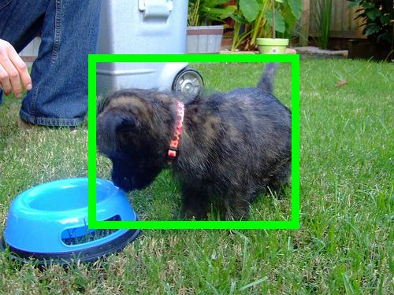 |
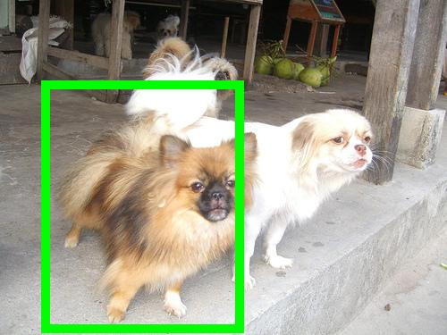 |
 |
| 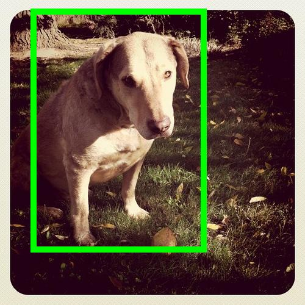 |
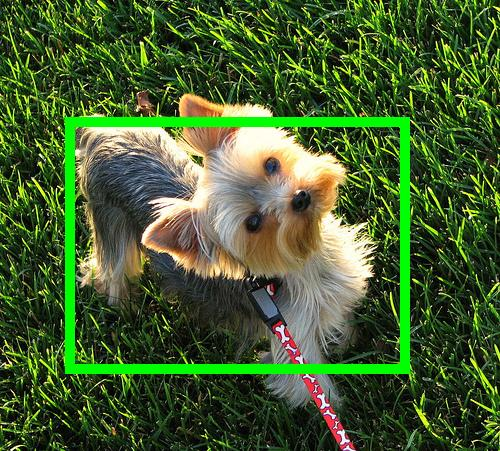 |
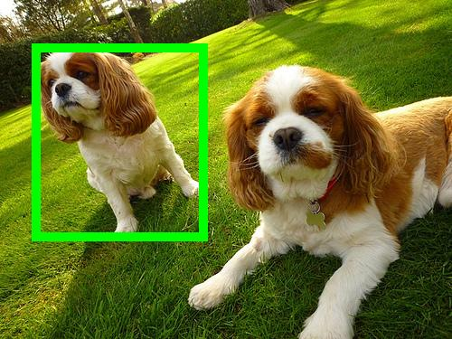 |
| 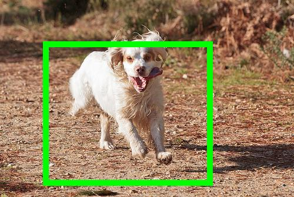 |
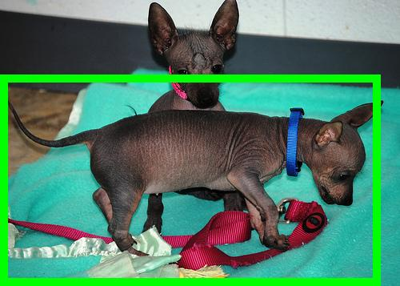 |
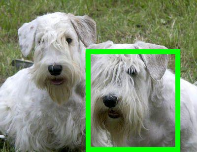 |
- A box is a bad bad bounding box if it:
- is around the wrong object
- is around multiple instances of the same object
- is too tight or too loose around the object
- These are bad bounding boxes for the dog object
 |
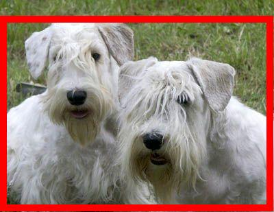 |
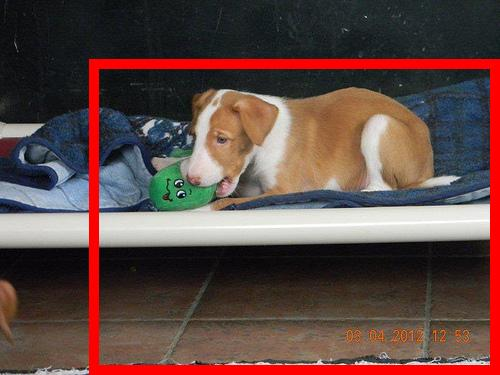 |
| 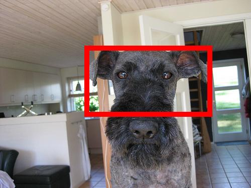 |
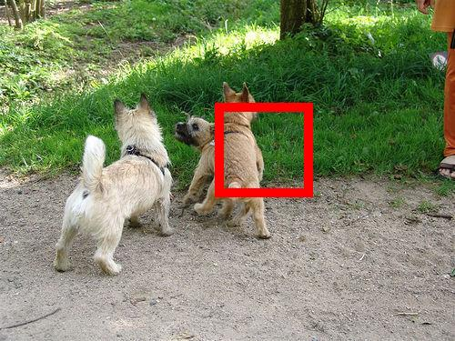 |
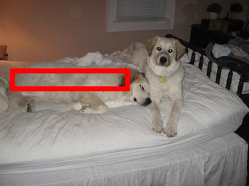 |
| 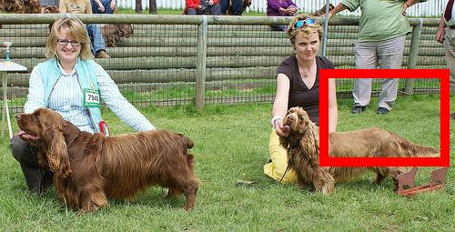 |
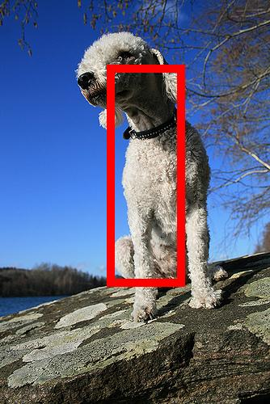 |
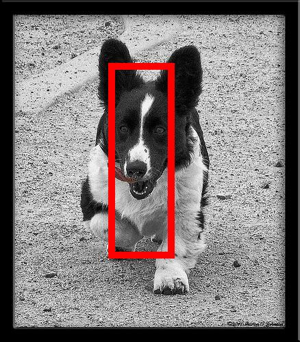 |
- If the question was about a generic object then all the green boxes above and the magenta box above are good.
Submitting
When you are finished with all questions, the 'Submit' button will become available.
When you click, your work will be checked for:
- Completeness: every question needs to be answered fully
- Accuracy: we will compare your answers to the answers we expect (on a random subset of questions)
If you don't meet the above criteria, you will receive an error message. You may go back and change your answers and try again.
All submissions will be approved automatically within 7 days. The only exception is if you enter profanity when naming the object and the script doesn't catch it automatically, we will reject your work retroactively.